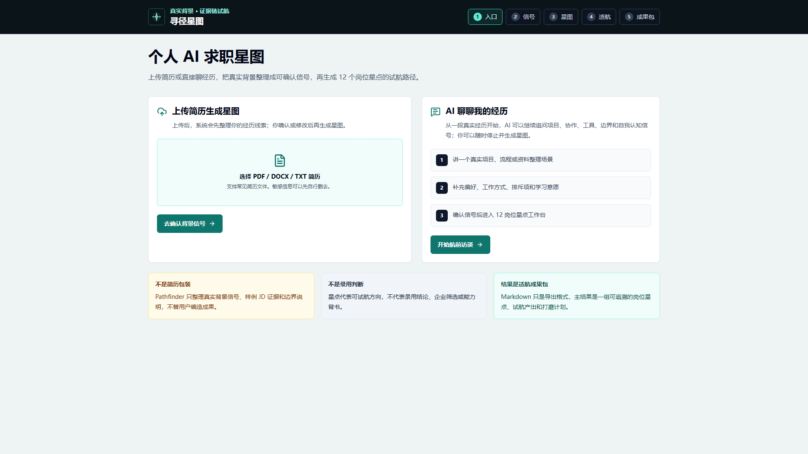
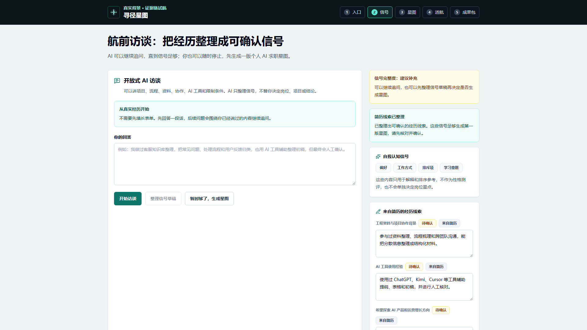
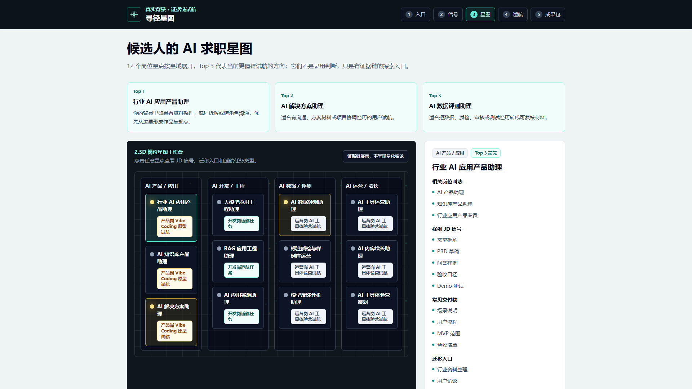
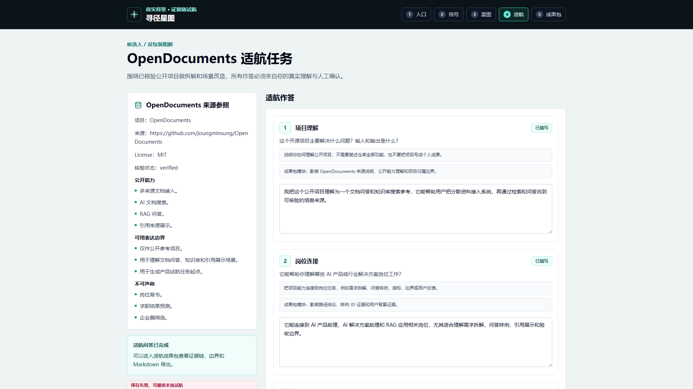

寻径星图
帮学生和早期求职者找到 AI 岗位切入点
很多学生和早期求职者想进入 AI 行业，但并不清楚自己的专业、项目和实习经历能对应哪些岗位，也不知道该做什么准备来应对求职。
寻径星图从这个问题出发：用户可以上传简历，也可以和 AI 聊自己的真实经历。系统会把经历整理成可确认的背景线索，再生成一张个人 AI 求职星图。星图里有基于真实 JD 样本提炼出的 AI 岗位星点，覆盖产品、开发、数据评测和运营增长等方向。用户可以看到当前更值得探索的几个岗位，也可以点开其他星点了解岗位任务、常见工作内容和适合的准备方式。
在确定方向后，产品会给出对应的适航任务。开发方向可以从开源项目拆解开始，产品方向可以用 Vibe Coding 做一个原型，运营方向可以设计一次 AI 工具体验营。最后生成一份试航成果包，帮助用户把这次探索沉淀成岗位理解、任务产出和后续打磨计划。

他们缺的不是一句建议，而是一条能走下去的路径
很多早期求职者有课程项目、实习、活动或工具使用经历，却很难判断这些经历能连接到哪些 AI 岗位。寻径星图把入口放在真实经历上，让用户先确认自己的背景线索，再进入岗位探索。
- 上传简历，或通过 AI 访谈补充真实经历。
- 系统整理候选背景线索，用户可以编辑和确认。
- 确认后的线索用于生成个人 AI 求职星图。
- 结果只用于求职准备，不做能力认证和录用预测。

把 AI 岗位变成可以点击、比较和试航的星点
星图里的岗位星点来自当前样例 JD 和样本趋势参考，覆盖产品、开发、数据评测和运营增长等方向。用户可以看到 Top 3 探索方向，也可以点开其他星点理解岗位任务和准备方式。

方向确定后，给用户一件能继续打磨的任务
适航任务不局限于开源项目。开发、产品、运营方向分别对应不同准备方式，让用户把岗位理解落到具体产出上。
开发方向
从已审计开源项目拆解和场景改造开始，形成项目理解、技术边界和面试追问准备。
产品方向
用 Vibe Coding 做一个可讲清楚的产品原型，沉淀用户流程、PRD 摘要和验收指标。
运营方向
设计一次 AI 工具体验营，覆盖目标人群、活动节奏、内容日历和复盘指标。

把一次探索沉淀成岗位理解、任务产出和后续计划
- 岗位星点结论：当前更值得探索的方向。
- 证据链：来自用户确认线索、样例 JD 和任务材料。
- 任务产出：围绕开发、产品或运营方向形成可继续打磨的材料。
- 边界说明：不包装经历，不声称开源项目归属，不预测录用结果。
适航成果包包含什么
- 岗位理解：用户为什么值得从这个方向开始探索。
- 任务产出：本次试航可以沉淀哪些作品集材料。
- 证据链：用户背景、样例 JD 和试航任务如何对应。
- 边界说明：哪些内容不能写成个人原创、认证或录用承诺。
- 打磨计划：未来 3 天和 7 天继续完善的动作。